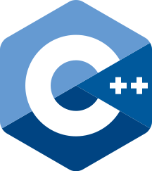
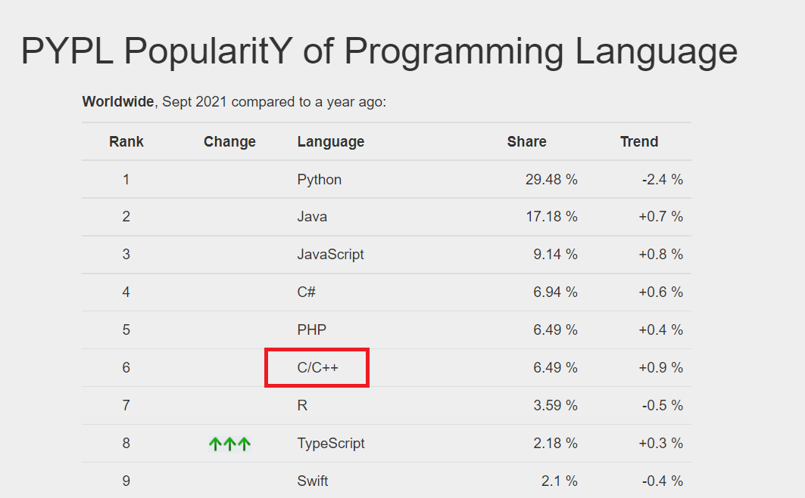
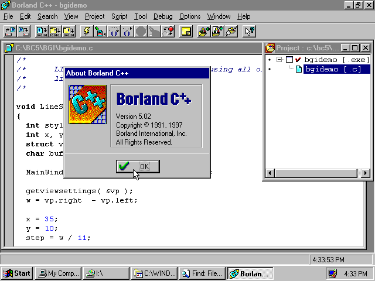
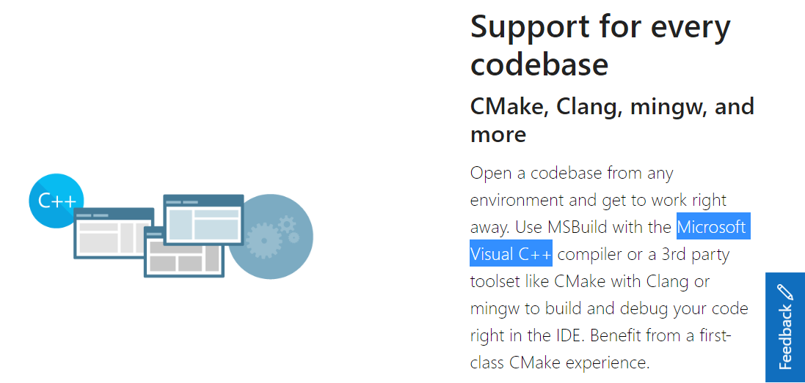
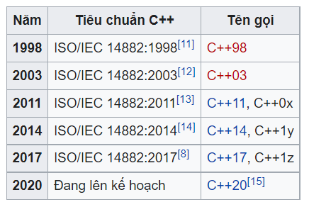
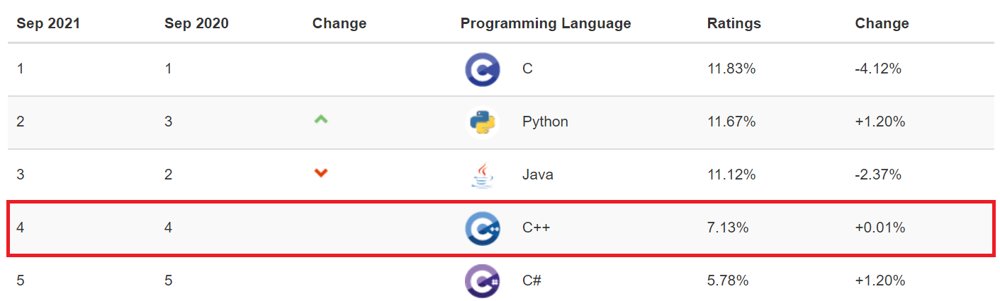
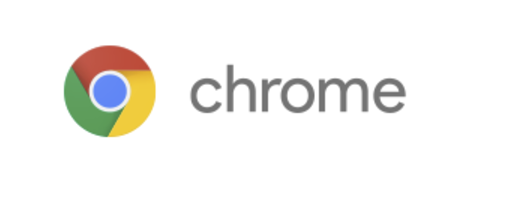
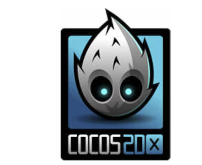

Các bạn đang bắt đầu học ngôn ngữ lập trình C++ có bao giờ tự hỏi các câu hỏi này không?
- Ngôn ngữ C++ là gì vậy?
- C++ thì khác gì ngôn ngữ C nhỉ?
Để giúp các bạn mới bắt đầu học về ngôn ngữ C++ có cái nhìn rõ ràng hơn về ngôn ngữ lập trình C++ là gì, đặc thù của C++ cũng như thị trường của ngôn ngữ này mà bài viết bạn đang đọc cũng như các bài viết khác trong chuyên đề Lập trình C++ cơ bản dành cho người mới học lập trình đã ra đời. Hãy tham khảo nó trong quá trình học lập trình của bạn nhé.
Ngôn ngữ lập trình C++ là gì
C++ là ngôn ngữ lập trình mở rộng của C
C++ là một ngôn ngữ lập trình hướng đối tượng được mở rộng từ ngôn ngữ C. Trong ngôn ngữ C không có khái niệm lập trình hướng đối tượng, và để có thể lập trình hướng đối tượng thì các nhà phát triển đã thêm chức năng này cùng với nhiều cải tiến khác vào ngôn ngữ C, để tạo ra phiên bản mở rộng của C chính là ngôn ngữ C++.
Có thể hiểu đơn giản C++ chính là ngôn ngữ C với nhiều cải tiến khác nhau, bao gồm cả lập trình hướng đối tượng. Mặc dù được cải tiến từ C, nhưng nó vẫn có khả năng sử dụng các phương thức lập trình thủ tục như ngôn ngữ C truyền thống. Và một điều tuyệt vời nữa là, do C++ và C có tính tương hỗ với nhau, nên chúng ta cũng có thể sử dụng đồng thời cả C++ và C khi viết một chương trình máy tính.
C++ là ngôn ngữ lập trình hướng đối tượng
Như đã nói ở trên thì ngôn ngữ lập trình C++ là một loại ngôn ngữ lập trình hướng đối tượng. Hướng đối tượng ở đây là ý tưởng kết hợp các đối tượng (sự vật) để chạy một chương trình, ví dụ để chạy một máy điều hòa không khí bạn cần kết hợp với một cái điều khiển từ xa chẳng hạn.
Mặc dù không phải là ngôn ngữ lập trình hướng đối tượng đầu tiên được phát triển trên thế giới, nhưng C++ cũng thuộc hàng cụ tổ cụ cố trong danh sách các loại ngôn ngữ lập trình hướng đối tượng. Thật vậy, C++ được phát triển vào năm 1983 bởi nhà khoa học Bjarne Stroustrup của Nokia Bell Labs như một phiên bản mở rộng của ngôn ngữ C, và nếu so với các loại ngôn ngữ lập trình hướng đối tượng khác như Java, Python hay Swift thì C++ xứng đáng được gọi là lão đại trong nghề lập trình rồi.
Tuy nhiên, cổ không có nghĩa là cũ. Do những ưu thế riêng biệt của mình mà cho đến tận ngày nay thì C++ vẫn giữ được độ hot của nó, và được các lập trình trên toàn thế giới yêu thích. Tại thời điểm Kiyoshi viết bài này (21-09-24) thì ngôn ngữ C++ cùng với ngôn ngữ tiền thân của nó là C đang cùng đứng thứ 6 trên bảng xếp hạng các ngôn ngữ lập trình được yêu thích trên toàn thế giới.

Nguồn: PYPL
Do C++ được mở rộng từ C, nên tương tự như C thì ngôn ngữ C++ được thiết kế giống với cách con người nói và suy nghĩ, nhưng thứ con người nói thì máy tính lại không hiểu được. Do đó sau khi viết chương trình C++, để có thể chạy được chương trình này, chúng ta cần một hành động gọi là compile hay còn gọi là biên dịch, nhằm biên dịch mã nguồn của C++ thành dạng mã mà máy tính có thể hiểu và thực thi nó trong chương trình.
Và máy biên dịch sử dụng ở trên được gọi là trình biên dịch, và chúng ta sẽ cùng tìm hiểu trong một bài viết tiếp theo.
Có nhiều loại môi trường phát triển C++ khác nhau
Ngôn ngữ C++ có rất nhiều loại môi trường phát triển khác nhau, và nổi tiếng nhất có thể kể đến là BorlandC++ và VisualC++.
BorlandC++ là một package của C++ được công ty Borland phát triển, và được kèm theo miễn phí môi trường phát triển tích hợp C++Builder.

VisualC++ (Microsoft Visual C ++ Plus) là loại C++ khác được phát triển trong môi trường phát triển tích hợp của Microsoft.

VisualC++ tuân thủ theo tiêu chuẩn Standard C ++ và được bán dưới dạng gói Visual Studio, là một môi trường phát triển được tích hợp với các ngôn ngữ phát triển khác nhau như Visual Basic và Visual C#.
Các phiên bản của ngôn ngữ C++
C ++ có một lịch sử lâu đời, và nó cũng có rất nhiều phiên bản được cải tiến khác nhau xuyên suốt lịch sử của nó.
Trước khi C++ chính thức được đặt tên vào năm 1983, thì phiên bản đệm của C++ là C with Classes đã bắt đầu từ những năm 1979. Năm 1983, phiên bản này mới được đổi thành C++ cùng với nhiều cải tiến khác nhau đã thêm vào tại thời điểm đó. Và vào năm 1985, ấn bản đầu tiên của Ngôn ngữ lập trình C++ cũng đã được xuất bản thành sách.
Thời gian sau đó, C++ tiếp tục cải thiện và vào năm 2011, C ++ 11 đã được phát hành dưới dạng bản cập nhật lớn. Thời điểm hiện tại, phiên bản mới nhất là của C++ là C++17, được chính thức phát hành vào năm 2017.
Các phiên bản phát triển của C++ cụ thể như bảng dưới đây:

- Nguồn: wikipedia
Ngoài việc các tính năng khác nhau giữa các phiên bản C++, thì trong phiên bản mới nhất C++17 thì còn có rất nhiều các tính năng mới được thêm vào. Do đó, nếu bạn muốn học C++ thì Kiyoshi khuyên bạn lựa chọn các phiên bản mới như C++17 hoặc C++14 để học.
Ngôn ngữ C++ chiếm bao nhiêu thị trường thế giới

Nguồn: TIOBE Index
Bảng trên là Ranking của các ngôn ngữ trong thị trường thế giới (TIOBE Index) được TIOBE Software phát triển. Ranking này dựa vào kết quả tìm kiếm trên các công cụ tìm kiếm như Google, Yahoo, và thể hiện độ quan tâm và sử dụng của người dùng trên toàn thế giới đối với các ngôn ngữ lập trình.
Và bạn có thể thấy tại thời điểm Kiyoshi viết bài này (21-09-24) thì ngôn ngữ C++ đang đứng thứ 4 trong top TIOBE Index Ranking đấy. Cũng dễ hiểu vì tương tự như ngôn ngữ tiền thân C thì C++ với lịch sử lâu đời, thiết kế phù hợp với máy tính, tốc độ xử lý nhanh và độ tin cậy cao thì việc C++ vẫn đang được yêu thích và sử dụng là điều khỏi phải bàn cãi.
Ưu điểm và đặc trưng của ngôn ngữ lập trình C++
C++ kế thừa ưu điểm về tốc độ xử lý của C
Giống như C thì C++ có khả năng xử lý chương trình cực nhanh. C++ hoạt động tương đối nhanh so với các ngôn ngữ script thông thường, và thích hợp để phát triển các ứng dụng thực hiện các xử lý phức tạp và cần tải cao cũng như phần mềm kinh doanh quy mô lớn.
Điều này là do C++ được kế thừa khả năng điều khiển trực tiếp bộ nhớ máy tính và tiết kiệm bộ nhớ của ngôn ngữ C.
Do đó, đối với các hệ thống xử lý lượng dữ liệu lớn, chẳng hạn như xử lý phân tích dữ liệu và machine learning, yêu cầu xử lý tốc độ cao thì ngôn ngữ C++ thường được lựa chọn để phát triển.
Giống như ngôn ngữ tiền thân là C thì C++ thường được sử dụng trong các hệ thống quy mô lớn trong suốt lịch sử phát triển của nó. Có thể nói C++ với sự tích hợp của nhiều công nghệ xử lý thông tin trong nó đã khiến C++ có độ tin cậy cao, và trở thành lựa chọn hàng đầu trong nhiều dự án.
Ứng dụng của C++ rất đa dạng, từ việc phát triển phần mềm, hệ thống cho đến các công nghệ tiên tiến như IoT và phân tích dữ liệu, và có thể nói đây là một ngôn ngữ lập trình rất đáng để chúng ta học hỏi.
Hiểu về C++ sẽ hiểu về máy tính
Mặc dù không thể điều khiển trực tiếp phần cứng trong máy tính như ngôn ngữ assembly, nhưng C++ là ngôn ngữ lập trình bậc cao có khả năng thực hiện các xử lý điều khiển đồng mức như ngôn ngữ assembly.
Và vì C ++ có thể sử dụng tất cả các chức năng của ngôn ngữ C, nên nó đòi hỏi kiến thức sâu hơn về máy tính so với các ngôn ngữ khác, chẳng hạn như con trỏ và các chức năng quản lý và tiết kiệm bộ nhớ khác.
Do vậy, bạn chắc chắn sẽ làm quen và hiểu sâu hơn về máy tính sau khi học C++, vì ngôn ngữ này có khả năng điều khiển cũng như cách sử dụng hiệu quả các tài nguyên có hạn của máy tính.
Khả năng áp dụng vào các ngôn ngữ lập trình khác
Ngôn ngữ C++ là sự kết hợp hoàn hảo giữa tính linh hoạt của lập trình hướng đối tượng, và kế thừa tính cấp cao có thể được lệnh trực tiếp đến máy tính của ngôn ngữ C. Vì vậy, nếu bạn thành thạo ngôn ngữ C++ thì khi học các ngôn ngữ khác sẽ dễ dàng hơn.
Ngoài ra, với lợi thế quen thuộc hơn về máy tính, cũng như việc quen thuộc với cách viết các quy trình phức tạp khi bạn học C++, bạn sẽ ngạc nhiên về sự dễ hiểu của các ngôn ngữ khác và sẽ khiến việc học các ngôn ngữ khác sau khi học C++ trở nên dễ dàng hơn.
Ngôn ngữ lập trình C++ được sử dụng làm gì
C++ không những được sử dụng trong các dự án lớn nhỏ với quy mô khác nhau, mà còn đựng ứng dụng trong rất nhiều lĩnh vực khác. Chúng ta sẽ cùng tìm hiểu một số lĩnh vực ứng dụng ngôn ngữ C++ như sau:
Ứng dụng và trò chơi trên điện thoại thông minh
Để phát triển ứng dụng điện thoại thông minh, chúng ta có ngôn ngữ Java cho Android, Objective-C và Swift cùng một số ngôn ngữ khác cho iOS.
Tuy nhiên ngay cả trong C++, nếu bạn sử dụng môi trường phát triển tích hợp của C++ là C++ Builder, thì bạn có thể phát triển các ứng dụng gốc hỗ trợ cả Android lẫn iOS.
Bạn cũng có thể phát triển C++ trên Windows bằng cách sử dụng Visual Studio, môi trường phát triển tích hợp của Microsoft. C++ cũng được sử dụng trong phát triển trò chơi, hầu hết các trò chơi được làm bằng C hoặc C ++, và trong C++ cũng có các thư viện riêng chuyên cho việc phát triển trò chơi.
Phát triển hệ thống kinh doanh
C++ thường được sử dụng trong các hệ thống kinh doanh quy mô lớn được vận hành bởi các công ty lớn, trong các hệ thống tài chính và hệ thống các tổ chức công do chính phủ điều hành.
Điều này là do C++ có khả năng kiểm soát các hệ điều hành phổ biến như Windows và Linux, cũng như tốc độ thực thi của các chương trình được viết bởi C++ nhanh hơn nhiều so với các ngôn ngữ khác.
Một lý do khác là do tiền thân của C++ là ngôn ngữ C vốn đã được sử dụng trong các hệ thống quy mô lớn, và C++ cũng được thừa hưởng độ tin cậy cao từ C, với việc được tích hợp nhiều công nghệ để xử lý thông tin.
Ứng dụng WEB
C++ cũng được sử dụng trong việc phát triển một số ứng dụng web.
Có ý kiến cho rằng C++ với tốc độ thực thi ứng dụng nhanh hơn và hoạt động ổn định so với các ngôn ngữ khác thì nên được sử dụng nhiều hơn trong phát triển ứng dụng web. Tuy nhiên thì gần đây các ngôn ngữ như PHP, Ruby và Python, vốn được tối ưu hóa để phát triển dịch vụ Web, mới đang là xu hướng chủ đạo.
Do đó, có thể nói rằng C++ hiếm khi được sử dụng để phát triển các ứng dụng web ngày nay.
Một số dịch vụ được phát triển bằng C++
Có thể bạn không để ý, nhưng một số dịch vụ hay ứng dụng mà chúng ta hay sử dụng hằng ngày lại được phát triển bằng C++ đấy.
Chrome

Trình duyệt web được sử dụng rộng rãi trên toàn thế giới này, và ngoài Cốc Cốc ra thì nó cũng đang được cài đặt trong hầu hết các máy tính kết nối mạng tại Việt Nam.
Và, phần lớn các ứng dụng, plugin của Chrome đều được viết bởi C++ đấy các bạn ạ.
Cocos2d-x

Cocos2d-x là một nền tảng đa năng được phát triển bởi ngôn ngữ C++, và được sử dụng để tạo ra các trò chơi chất lượng cao trên nhiều nền tảng khác nhau.
Ngoài C++, nó cũng có thể phát triển bằng các ngôn ngữ khác như JavaScript và Lua.
Unreal-Engine
Unreal-Engine là một công cụ trò chơi được phát triển bởi C++, và được dùng để tạo ra các trò chơi chất lượng cao trên nhiều nền tảng khác nhau. Nó cũng được sử dụng trong việc phát triển các tựa game lớn.
Học C++ có khó không?
Câu trả lời là học C++ rất khó, còn khó hơn cả học C. Đơn giản vì C++ là phần mở rộng của C và được thêm vào lập trình hướng đối tượng, nên ngoài kiến thức căn bản về lập trình và máy tính trong C thì bạn cũng phải học thêm cả lập trình hướng đối tượng nữa.
Học C++ khó vì có lập trình hướng đối tượng.
Khác với ngôn ngữ tiền thân là C thì C++ là ngôn ngữ lập trình hướng đối tượng, do đó để học được C++, trước hết chúng ta cần phải lý giải được lập trình hướng đối tượng là gì. Bởi vậy sau khi học xong ngôn ngữ lập trình thủ tục C và bắt đầu học tiếp C++, bạn có thể sẽ dễ dàng bị nhầm lẫn giữa cấu trúc của hai kiểu lập trình này.
Ngược lại, nếu bạn bắt đầu học C++ mà không học C trước, thì việc phải tiêu hóa các kiến thức nền tảng lập trình với số lượng kiến thức, từ vựng liên quan đồ sộ, thì việc học lập trình C++ cho người mới bắt đầu học lập trình quả thực là không dễ chút nào.
Ngoài ra, phong cách viết C++ có xu hướng hơi phức tạp so với các ngôn ngữ khác cũng là một điểm khó khi chúng ta học C++.
Học C++ khó vì có thông số kỹ thuật phức tạp
C++ là một phần mở rộng của C được thêm ngôn ngữ hướng đối tượng, vì vậy đặc tả của ngôn ngữ C++ rất phức tạp. C++ là ngôn ngữ giúp máy tính trở nên thân thiện với con người, nhưng vì thế mà trong C++ cũng tồn tại các xử lý bậc cao vốn không có trong các ngôn ngữ lập trình khác, ví dụ như con trỏ chẳng hạn. Để lý giải được các khái niệm này sẽ tốn không ít thời gian của người mới học lập trình.
Ngoài ra, khác với các ngôn ngữ khác được chuẩn bị các hàm cài sẵn có thể giúp bạn giải quyết nhiều xử lý chỉ trong vài dòng code, thì trong C++ lại không có nhiều hàm cài sẵn tiện dụng như vậy, và hầu như chúng ta phải tự viết tất cả các xử lý trong chương trình. Việc bạn cũng phải tạo ra quá trình xử lý của riêng mình là rất cần thiết trong C++.
Nhưng nên học C++ vì nó chất
Mặc dù học C++ rất khó, nhưng mà khó nhưng nó chất là tất cả những gì có thể miêu tả về C++.
Qua những phân tích ở trên của Kiyoshi, bạn cũng có thể thấy độ tin cậy, khả năng ứng dụng của C++, cũng như những lợi ích to lớn của việc học C++ mang lại rồi phải không.
Và vì thế mà hiện nay C++ đã trở thành một bộ môn khá quan trọng trong hệ thống giảng dạy đại học, cao đẳng tại Việt Nam cũng như trên trường quốc tế. Và cùng với Python thì C++ cũng được lựa chọn như 2 ngôn ngữ được bộ giáo dục dự tính để thay thế cho Pascal trong chương trình giáo dục phổ thông trong thời gian tới.
Có cần học C trước rồi mới học C++ không?
Đây là câu hỏi mà có lẽ nhiều bạn sẽ vô cùng băn khoăn khi phải lựa chọn giữa việc học C và C++.
Do C++ là phần mở rộng của C nên nó được kế thừa rất nhiều từ C. Bởi vậy nếu bạn đã học C rồi mà muốn học thêm C++, với nền tảng lập trình có được từ C thì việc học C++ là vô cùng dễ dàng.
Tuy nhiên, chúng ta không nhất thiết phải học C trước rồi mới học C++. Giữa C++ và C có nhiều phần chung, nên thực ra bạn cũng có thể học C ngay cả trong khi đang học C++.
Đúng hơn thì bạn nên học C++ trong trạng thái chưa biết gì về C. C++ là ngôn ngữ lập trình hướng đối tượng, điều mà ngôn ngữ C không có. Nếu mục tiêu của bạn là học C++, bạn nên bắt đầu với C++ thay vì học C, để bạn có thể làm quen với các tính năng chỉ có ở C++ mà thôi.
Tuy nhiên do giữa C và C++ có nhiều điểm trùng lặp, nên trong một số khóa học hay sách tham khảo, phần trùng lặp này có thể được lược bỏ, và nếu muốn sử dụng các kiến thức này, bạn cũng cần phải tự nghiên cứu về chúng trước ở một mức độ nào đó.
Nếu bạn cảm thấy chưa chắc chắn và muốn bắt đầu từ ngôn ngữ C trước khi học C++, thì cũng không sao cả. Kiyoshi cũng đã chuẩn bị một chuyên đề vô cùng chi tiết về C để bạn có thể bắt đầu học ngay từ ngày hôm nay.
Có nên học C++ không?
Học C++ rất khó. Nhưng bù lại, bạn sẽ nhận được phần thưởng xứng đáng là nền tảng lập trình, kiến thức về máy tính, và phần quan trọng nhất chính là lập trình hướng đối tượng. Đây là phần kiến thức vô cùng quan trọng để bạn có thể tiếp tục chinh phục các ngôn ngữ lập trình hướng đối tượng khác như Java, Python hay Swift.
Vấn đề còn lại là bạn có bao nhiêu thời gian có thể sử dụng cho việc học C++ mà thôi.
Nếu bạn đang tự học lập trình và phân vân nên chọn ngôn ngữ lập trình nào để học, hoặc là một người rẽ trái ngành và muốn học nhanh chóng một ngôn ngữ lập trình để có thể ứng dụng ngay trong công việc, thì Kiyoshi khuyên bạn hãy chọn các loại ngôn ngữ dễ học và được ưa chuộng hơn như là Python hay JavaScript chẳng hạn. Và Kiyoshi cũng đã chuẩn bị 2 chuyên đề là Python cơ bản - lập trình python cho người mới bắt đầu và Học javascript - lập trình javascript cơ bản cho bạn.
- Xem thêm: Python cơ bản - lập trình python cho người mới bắt đầu
- Xem thêm: Học javascript - lập trình javascript cơ bản
Nếu bạn là học sinh hay sinh viên có thầy cô hướng dẫn, hoặc là người muốn bắt đầu học lập trình từ các kiến thức nền tảng, để sau đó học thêm các ngôn ngữ lập trình hướng đối tượng khác, thì Kiyoshi khuyên bạn hãy bắt đầu việc học lập trình từ ngôn ngữ C++. Sau khi master ngôn ngữ này, bạn có thừa nền tảng để có thể chinh phục tiếp các ngôn ngữ lập trình tiếp theo, hoặc là thử sức với việc phát triển các hệ thống đồ sộ sử dụng C++ làm ngôn ngữ phát triển.
Và Kiyoshi cùng trang web Lập trình căn bản. com với sứ mệnh mang những kiến thức lập trình chắt lọc từ Nhật Bản về Việt Nam cũng sẽ là nguồn tham khảo hữu ích cho bạn khi bạn chọn C++ làm ngôn ngữ lập trình đầu tiên của mình.
Tổng kết
Trên đây Kiyoshi đã hướng dẫn bạn về ngôn ngữ lập trình C++ cũng như đặc thù của ngôn ngữ này rồi. Để nắm rõ nội dung bài học hơn, bạn hãy ôn lại các kiến thức của của ngày hôm nay nhé.
Và hãy theo dõi chuyên đề Lập trình C++ cơ bản dành cho người mới học lập trình trong các bài viết tiếp theo.
URL Link
HOME › lập trình c++ cơ bản dành cho người mới học lập trình>>01. giới thiệu ngôn ngữ c++